Click on the ICC link below to go back to the Homepage
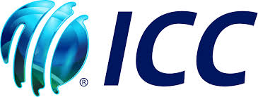
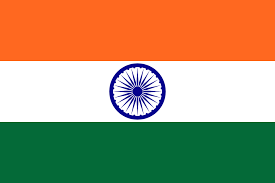 |
History |
The 1970s |
present and few years ago the great age of players like Rohit Sharma and Virat Kholi were present at this time india was in the middle of the t20 world cup and had won against South Africa |
Venues |
Eden Gardens, Kolkata Capacity: 68,000 Notable Matches: Hosted the 1987, 1996, and 2011 World Cup matches, including the 2016 ICC World Twenty20 final. M. A. Chidambaram Stadium, Chennai Capacity: 38,200 Notable Matches: Hosted the 1987, 1996, and 2011 World Cup matches, and the famous tied Test against Australia in 1986. Wankhede Stadium, Mumbai Capacity: 33,000 Notable Matches: Hosted the 2011 World Cup final where India won against Sri Lanka. Arun Jaitley Stadium, Delhi Capacity: 41,820 Notable Matches: Hosted the 1987, 1996, and 2011 World Cup matches. M. Chinnaswamy Stadium, Bangalore Capacity: 40,000 Notable Matches: Hosted the 1987, 1996, and 2011 World Cup matches, and the 2016 ICC World Twenty20 matches. honerable mention Narendra Modi Stadium |
world records |
The Indian team held many world records including |
What place did they get in every world cup(odi) |
1975: Group Stage |
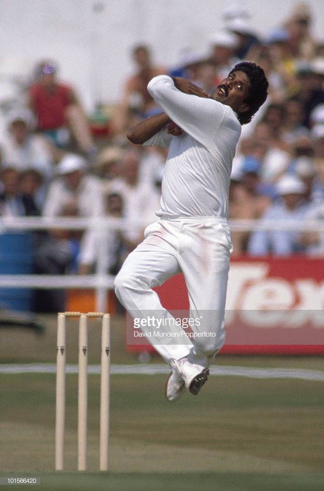
Kapil Dev, one of India's greatest all-rounders, took 434 wickets in 131 Test matches, with best bowling figures of 9/83, and maintained an average of 29.64. In One Day Internationals (ODIs), he took 253 wickets in 225 matches, with best bowling figures of 5/43, and an average of 27.45. His remarkable bowling achievements, including 23 five-wicket hauls in Tests and one in ODIs9
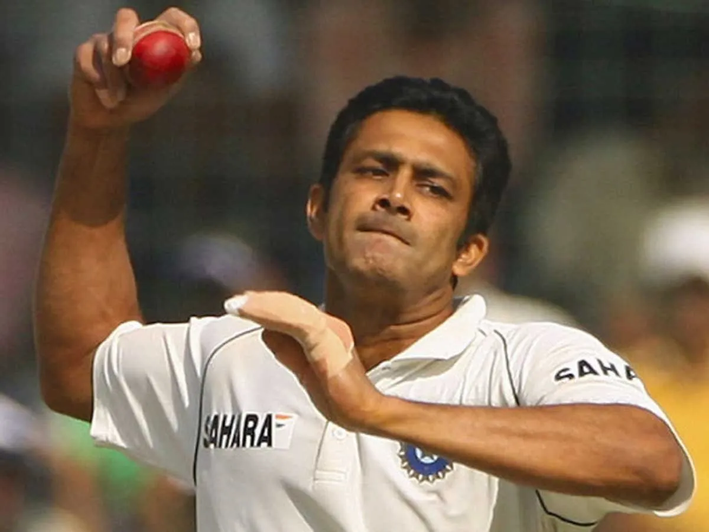
Anil KumbleAnil Kumble, one of India's greatest bowlers, took 619 wickets in 132 Test matches, with best bowling figures of 10/741. In ODIs, he claimed 337 wickets in 271 matches, with best figures of 6/122. Known for his consistency and match-winning performances, he is the third-highest wicket-taker in Test cricket history
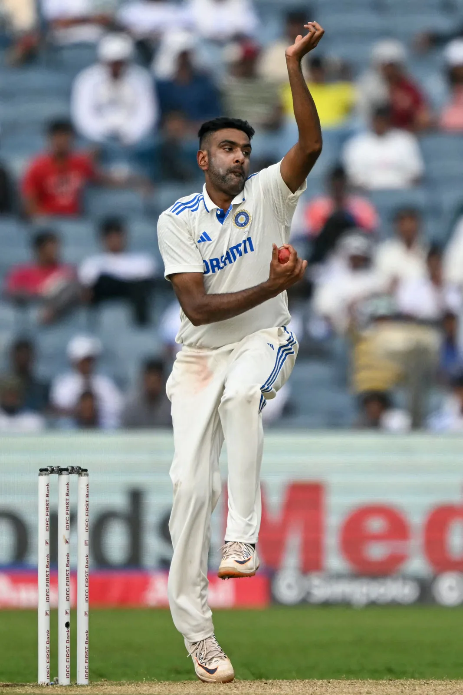
Ravichandran AshwinRavichandran Ashwin is one of India's premier off-spinners and a key player in the Indian cricket team. In Test cricket, he has taken 537 wickets in 106 matches, with best bowling figures of 7/591. In ODIs, he has claimed 151 wickets in 113 matches, with best figures of 4/252. Ashwin is known for his variations, including the carrom ball, and his ability to perform in all formats of the game
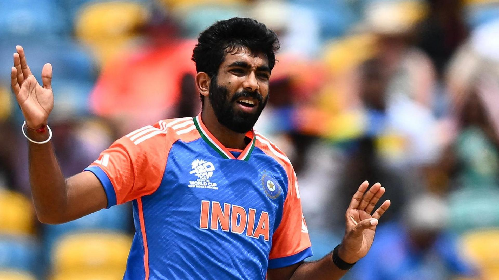
Jaspirit BumrahJasprit Bumrah is one of India's premier fast bowlers, known for his unique bowling action and exceptional skills. In Test cricket, he has taken 205 wickets in 45 matches, with best figures of 6/271. In ODIs, he has claimed 121 wickets in 72 matches, with best figures of 5/27
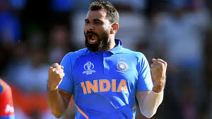
Mohammed ShamiMohammed Shami is one of India's leading fast bowlers, known for his pace, accuracy, and ability to swing the ball. In Test cricket, he has taken 229 wickets in 64 matches, with best bowling figures of 6/561. In ODIs, he has claimed 202 wickets in 105 matches, with best figures of 5/692.
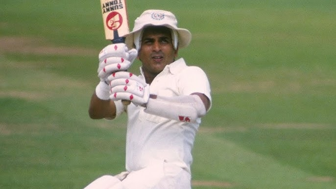
Sunil GavaskarSunil Gavaskar, one of the greatest opening batsmen in cricket history, played for India from 1971 to 1987. He scored 10,122 runs in 125 Test matches, with a highest score of 236* and an average of 51.121. In ODIs, he accumulated 3,092 runs in 108 matches, with a highest score of 103*1. Known for his impeccable technique and concentration, Gavaskar was the first player to reach 10,000 runs in Test cricket
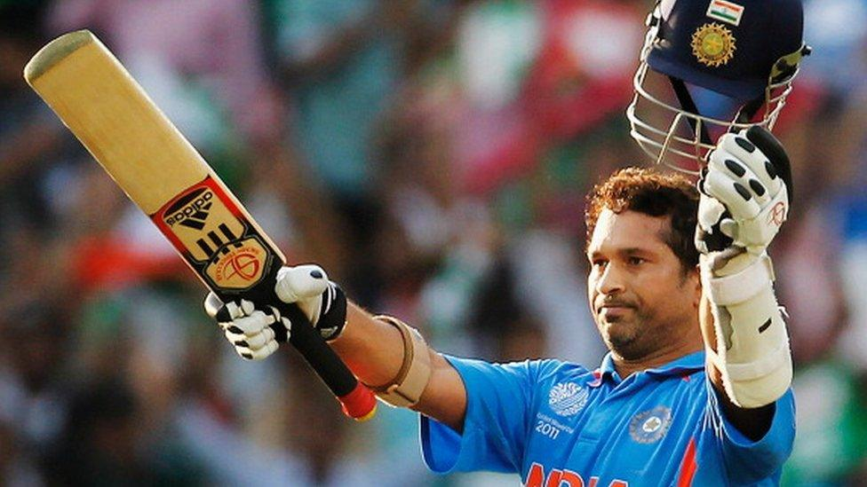
Sachin TendulkarSachin Tendulkar, often referred to as the "God of Cricket," is one of the greatest batsmen in the history of the sport. He scored 15,921 runs in 200 Test matches, with a highest score of 248* and an average of 53.79. In ODIs, he amassed 18,426 runs in 463 matches, with a highest score of 200* and an average of 44.83. Tendulkar holds numerous records, including the most runs and centuries in both Tests and ODIs, and he was the first player to score 100 international centuries
 Rahul Dravid
Rahul Dravid
Rahul Dravid, known as "The Wall," is one of India's greatest batsmen, renowned for his solid technique and concentration. He scored 13,288 runs in 164 Test matches, with a highest score of 270 and an average of 52.311. In ODIs, he accumulated 10,889 runs in 344 matches, with a highest score of 153 and an average of 39.16
 Virendar Sehwag
Virendar Sehwag
Virender Sehwag, known for his explosive batting, revolutionized the role of an opening batsman with his aggressive style. He scored 8,586 runs in 104 Test matches, with a highest score of 319 and an average of 49.341. In ODIs, he accumulated 8,273 runs in 251 matches, with a highest score of 219 and an average of 35.05
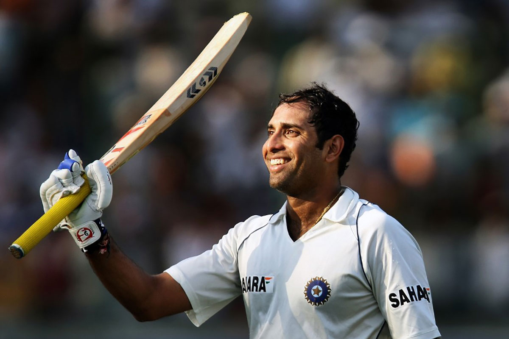
VVS laxmanVVS Laxman, known for his elegant and wristy stroke play, is one of India's finest Test batsmen. He scored 8,781 runs in 134 Test matches, with a highest score of 281 and an average of 45.971. Laxman is best remembered for his epic 281 against Australia in 2001, which helped India achieve a historic victory
 Virat Kholi
Virat Kholi
Virat Kohli is one of the greatest batsmen of the modern era, known for his consistency and aggressive style. He has scored 9,230 runs in 123 Test matches, with a highest score of 254* and an average of 46.851. In ODIs, he has amassed 13,985 runs in 298 matches, with a highest score of 183 and an average of 57.79
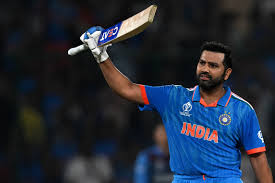
Rohit SharmaRohit Sharma is one of India's premier batsmen, known for his elegant stroke play and ability to score big hundreds. In Test cricket, he has scored 4,301 runs in 67 matches, with a highest score of 212 and an average of 40.571. In ODIs, he has amassed 13,985 runs in 298 matches, with a highest score of 264 and an average of 48.96